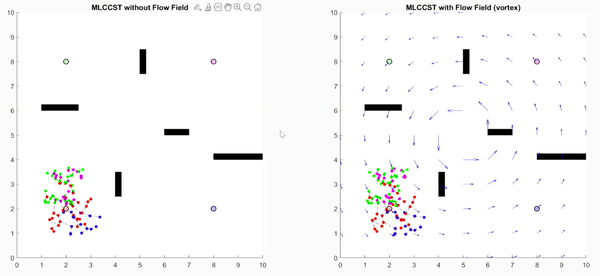
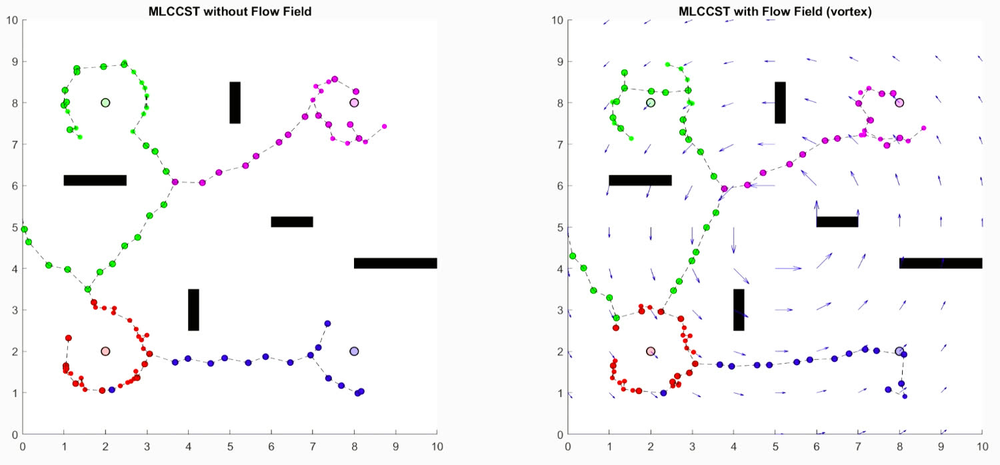
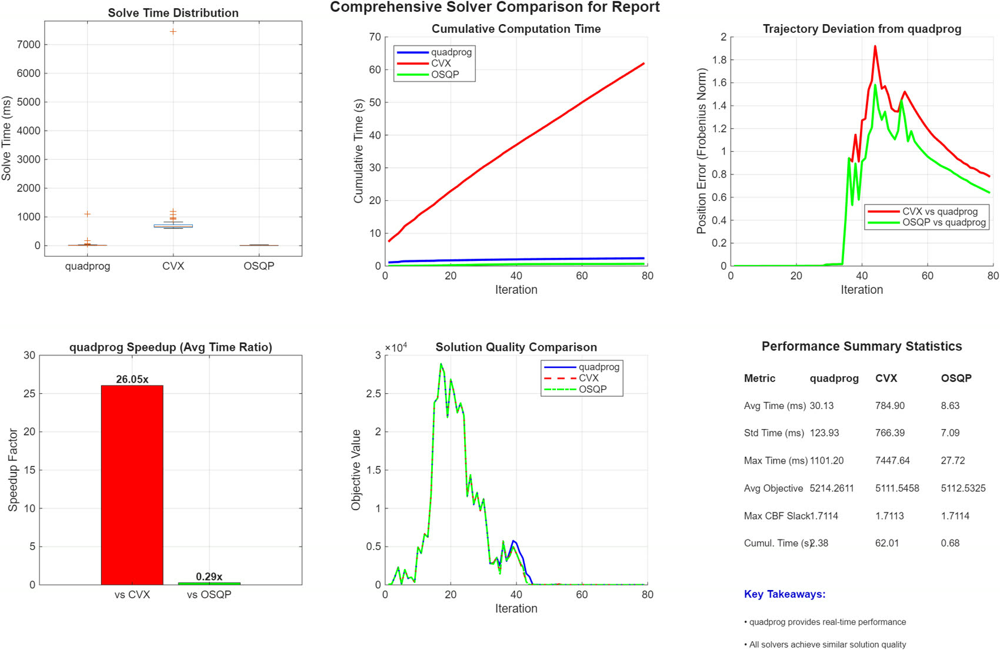

70 Robots, One Quadratic Program, Solved Three Ways
A fleet of robots crosses a cluttered workspace while keeping line-of-sight communication alive. At every control step, a convex QP nudges a nominal goal-seeking controller just enough to stay safe, stay connected, and stay inside actuator limits — safety and connectivity as control barrier functions, goal convergence as a control Lyapunov function. The research question isn't a new barrier function. It's the numerical one underneath: given a fixed safety-critical QP, how do different solvers behave in the inner loop, and what do the KKT multipliers say about which constraints are actually driving the fleet?
quadprog, CVX, OSQP. Bottom row: per-iteration solve time, objective value, and max CBF slack.Least-change projection: let the robot do what it wants, minus the parts that kill it.
The architecture is a safety filter. A nominal controller proposes whatever heads for the goal; the QP finds the closest admissible input to that proposal. Nothing about the nominal controller has to be safe, which is the point — safety is enforced structurally, at the last step, rather than woven into every behavior upstream.
Under single-integrator dynamics, both the CLF and CBF conditions are affine in the control input. That's the property the whole method rests on: an objective that's quadratic in u with linear constraints is a convex QP, and a convex QP is something you can solve to global optimality at every tick of a control loop.
s.t. Acbf(x)·u − δ ≤ bcbf(x) // safety · connectivity · obstacles
Aclf(x)·u − ε ≤ bclf(x) // goal convergence, relaxable
−umax𝟙 ≤ u ≤ umax𝟙, δ ≥ 0, ε ≥ 0
The slack variables carry the priority ordering. Safety and connectivity get slack δ penalized heavily; goal convergence gets slack ε penalized less. When the two genuinely conflict — a robot must break formation or hit something — the QP stays feasible by relaxing the cheaper constraint, and the magnitude of the slack is a readout of exactly how much was given up. A hard-constrained formulation would simply fail to solve.
| Constraint | Barrier | Inequality |
|---|---|---|
| Inter-robot safety | hsafeij = dij − Rs | nijᵀ(ui − uj) ≥ −αs(dij − Rs) |
| LOS connectivity | hconnij = Rc − dij | nijᵀ(ui − uj) ≤ αc(Rc − dij) |
| Obstacle avoidance | hobsio = dio − Robs | nioᵀui ≥ −αo(dio − Robs) |
Safety and connectivity are the same inequality with the sign flipped — one pushes robots apart below Rs, the other pulls them together above Rc. Every pair is squeezed inside an annulus, and connectivity is enforced only along a minimum spanning tree of the LOS graph rather than every edge, which keeps the constraint count linear in the fleet size instead of quadratic. That's what makes 70 robots tractable.
KKT: necessary, sufficient, and physically readable.
Because H ⪰ 0 and every constraint is linear, the KKT conditions are necessary and sufficient — any point satisfying them is the unique global minimizer. That's not a footnote; it's what makes the entire cross-solver study meaningful. Three different algorithms are provably chasing the same point, so any disagreement between them is numerical, not structural.
The multipliers are also directly interpretable, which is half the value of solving it this way rather than hand-tuning a potential field:
| Nonzero multiplier on… | Physical reading |
|---|---|
| a safety row | two robots sit exactly on the safety boundary; that constraint is steering their relative motion |
| a connectivity row | that LOS edge is about to break and is being actively held together |
| an input bound | the robot is saturated at ±umax |
| a slack (δ, ε) | constraints are in genuine conflict — the value is how much safety or convergence was traded away |
A dual variable, in other words, is a sensor. Rather than inferring why the fleet did something from the trajectories afterward, the QP reports which constraints were binding at that instant and by how much.
Four clusters, five obstacles, one vortex.
N = 70 robots in a 10 × 10 m workspace with five rectangular obstacles, initialized in four tight clusters with fixed goals across the map — safety radius Rs = 0.25 m, communication range Rc = 4.0 m, obstacle clearance Robs = 0.8 m, umax = 3.0 m/s. Every solver ran identical initial conditions, goals, and CLF/CBF parameters; the fleet reaches its goals by iteration 79.
Two scenarios: a static workspace, and the same run with a vortex flow field superimposed — a stand-in for currents in the underwater setting this work ultimately targets. The flow distorts the trajectories substantially, and the optimization still preserves connectivity and delivers every robot to its goal.


Same QP, same seed, wildly different clocks.
Three solvers, three algorithm families: MATLAB quadprog
(interior-point), CVX (conic interior-point through a
disciplined-convex-programming modeling layer), and OSQP
(operator-splitting ADMM). Solve time, objective value, max CBF slack, and
trajectory deviation from the quadprog baseline were recorded every iteration.
| Solver | Avg (ms) | Max (ms) | Std (ms) | Total (ms) | Avg objective | Pos. diff (m) |
|---|---|---|---|---|---|---|
| quadprog (IPM) | 30.13 | 1101.20 | 123.93 | 2380.43 | 5214.26 | 0.00 |
| CVX (SDPT3) | 784.90 | 7447.64 | 766.39 | 62006.98 | 5111.55 | 0.78 |
| OSQP (ADMM) | 8.63 | 27.72 | 7.09 | 681.98 | 5112.53 | 0.64 |
Runtime. OSQP averages 8.63 ms, quadprog
30.13 ms, CVX 784.90 ms — one to two orders of magnitude
slower. Across the full horizon that's 0.68 s, 2.38 s, and 62 s of cumulative solve time.
For a controller that must close its loop every step, that's the difference between real
time and not.
The variance matters more than the mean. OSQP's worst-case solve is
27.72 ms against a 8.63 ms average — a tight, predictable distribution. quadprog
averages 30 ms but spikes to 1101 ms, a 36× excursion, with a standard
deviation four times its own mean. For hard-real-time work the tail is the specification,
not the average, and this is exactly the plot that argues for ADMM in the inner loop.
Agreement. Average objectives match within ~2%, and all three report essentially identical maximum CBF slack (≈1.7114) — they agree on when safety and connectivity are tightest, which is the property that actually matters for a safety filter. Trajectory deviation stays around 0.6–0.8 m in a 10 m workspace: visible, but driven by numerical tolerance rather than different control decisions.

Robustness is where the ranking flips. quadprog never broke
down numerically and hands back KKT multipliers directly, which is what makes the
constraint-level analysis above possible at all. OSQP occasionally satisfied its stopping
criteria while its KKT residuals were still larger than the interior-point solvers' — and
on exactly those iterations its objective and trajectory drifted furthest. Fast is not the
same as converged.
The headroom is real, though: OSQP exploits the structure here — P = H is diagonal and A is
time-invariant — so its (P + ρI) factorization is computed once and cached across the whole
run. With tuned ρ, scaling, and polishing it should be able to replace quadprog
in the loop safely. Verdict: quadprog as the reliable
baseline, OSQP as the real-time candidate pending tuning, CVX as a high-accuracy reference
for validating the formulation — never as a controller.
Why a planar toy problem is about ice.
This sits inside a larger effort on long-duration exploration of under-ice and subsurface environments with heterogeneous AUV fleets — the MOTHERSHIP concept — where communication is acoustic, intermittent, and range-limited, and GPS doesn't exist. Line-of-sight connectivity as a hard constraint isn't an academic flourish there; losing the graph means losing vehicles. The planar single-integrator abstraction is deliberately small so the tooling — the barrier formulation, the MST connectivity structure, the KKT analysis, the solver benchmarking — transfers to the harder vehicle models rather than being rebuilt for them.
Next steps identified in the report: track how the active CBF set evolves over time to quantify how often safety and connectivity genuinely compete; tune OSQP specifically for this QP with polishing, scaling, and warm-starting; and scale to larger teams with realistic AUV dynamics, communication delay, and environmental flow.
Prajjwal Dutta and Wenlong Zhang, Manufacturing Systems and Networks, Arizona State University. Full formulation, metrics, and 36-entry bibliography in the final report.
What this project proves.
Safety belongs in the constraint set, not the behavior. A filter that projects any nominal controller onto the admissible set means the planner never has to be trusted — which is the only version of this that survives contact with a learned or hand-tuned policy upstream. Convexity is the feature. Affine-in-u barriers turn a coupled 70-agent coordination problem into one QP with a unique global optimum per step, and that's what makes the solver question askable in the first place. And the solver is part of the controller. Same math, same seed, same KKT point — and a 90× spread in solve time plus a real difference in worst-case latency and numerical robustness. Choosing between them is a control engineering decision, not an implementation detail.